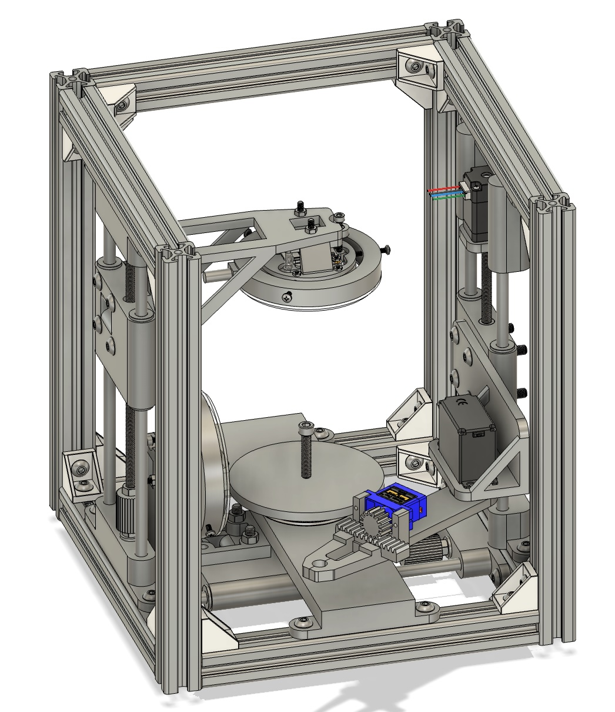
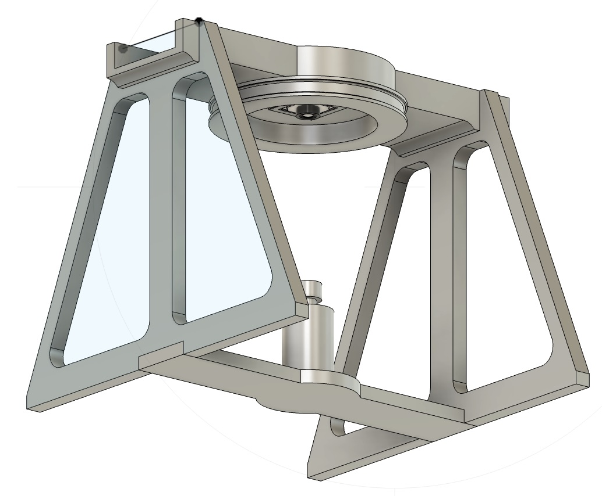
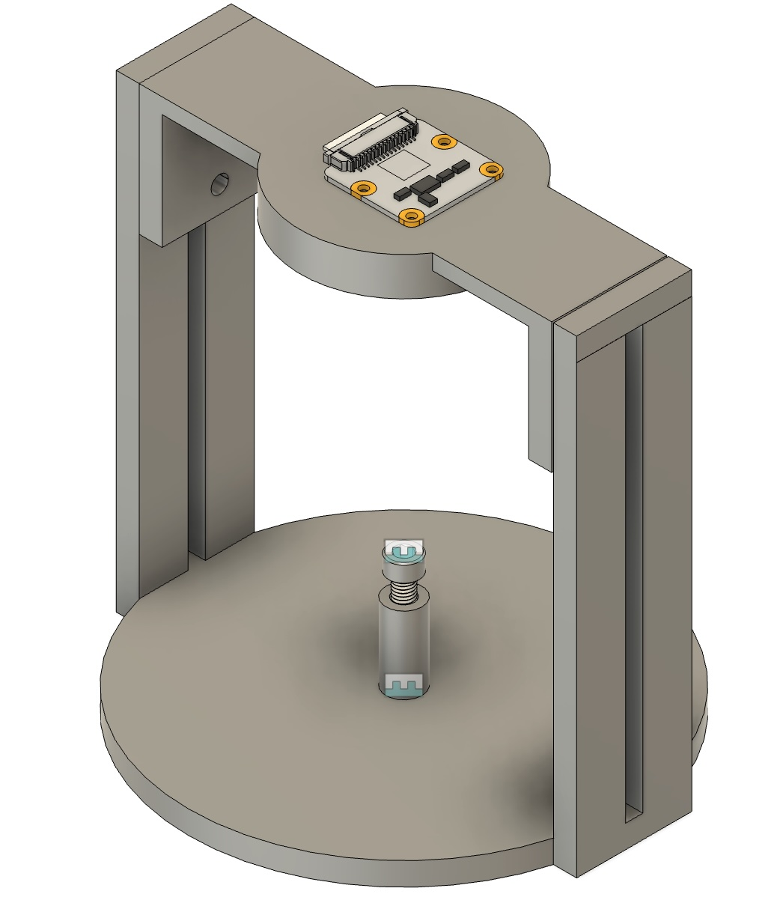

Overview
For my mechanical engineering capstone with Sandia National Laboratories, our team developed a compact, nondestructive prototype to screen aerospace fasteners for signs of counterfeiting. I worked on the integrated CAD assembly, camera mounts, rotating fixture, and scale interface, alongside the computer vision and validation workflow.
Gallery
Prototype demonstration · 1.5× speed
Rotating fixture and controlled lighting in the assembled prototype.



What
Develop a portable, nondestructive screening tool for aerospace fasteners within a 12 × 12 × 12 in envelope. The system combines visual inspection and weight measurement to evaluate bolts while preserving the parts for further testing.
How
I designed camera mounts, a rotating fixture, and a scale interface as an integrated CAD assembly. Controlled lighting and Raspberry Pi-based control supported image capture. A pretrained CNN and PaDiM anomaly detection compared bolt images with reference data from authentic fasteners.
Results
The computer vision pipeline achieved a 13-second fastener screening time during project testing. We produced an integrated mechanical prototype and used data acquisition, calibration, and validation tests to evaluate the imaging and weight verification workflow.